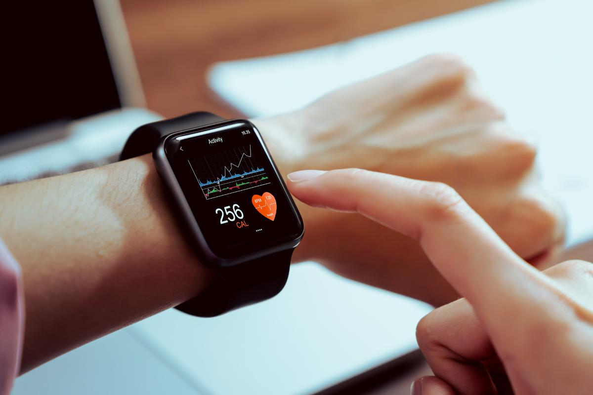
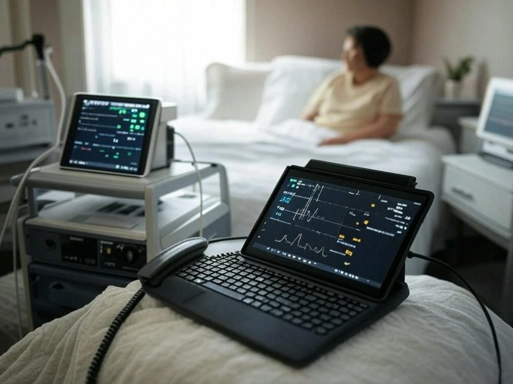
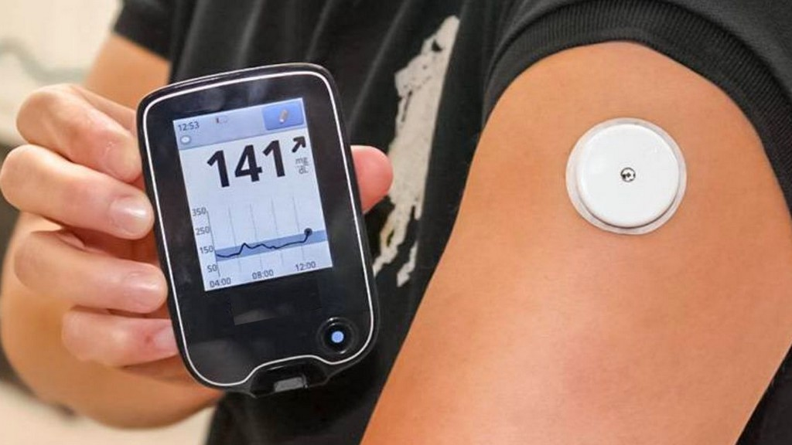
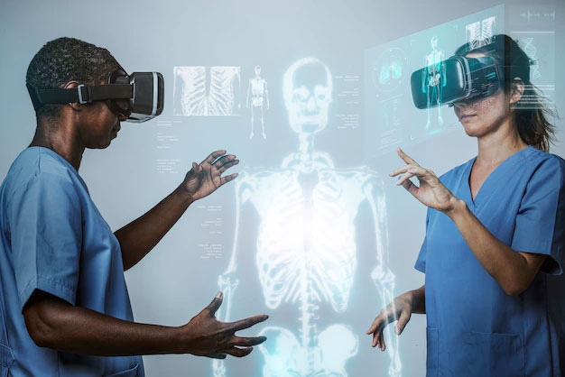

1 Introducción y contexto general
El Internet de las Cosas (IoT, del inglés Internet of Things) hace referencia a la interconexión digital de objetos físicos —sensores, dispositivos, actuadores— a través de redes de comunicación, permitiendo la recopilación, transmisión y procesamiento de datos de manera autónoma y en tiempo real. En el campo de la salud, esta tecnología se materializa en lo que se denomina Internet de las Cosas Médico (IoMT, Internet of Medical Things): un ecosistema de dispositivos médicos inteligentes, aplicaciones clínicas y plataformas en la nube que trabajan de forma coordinada para mejorar la calidad de la atención sanitaria.[4]
La integración del IoT en la medicina no es un fenómeno aislado ni superficial.[1] Representa una transformación estructural del paradigma de la atención en salud: se transita de un modelo reactivo —basado en la consulta periódica al médico cuando surgen síntomas— hacia un modelo proactivo y continuo, en el que los datos biométricos del paciente son monitoreados permanentemente, los sistemas emiten alertas tempranas y las decisiones clínicas se apoyan en análisis de datos masivos.[3]
Estas cifras ilustran con nitidez la magnitud del fenómeno. El IoT en salud no es una tendencia emergente —ya es una realidad consolidada— y su trayectoria de expansión indica que continuará redefiniendo los sistemas sanitarios a escala global durante las próximas décadas.
2 Importancia del IoT en la Salud
La relevancia del IoT en el ámbito sanitario es multidimensional. En primer lugar, responde a una necesidad epidemiológica urgente: el envejecimiento global de la población, el incremento de enfermedades crónicas no transmisibles —diabetes, hipertensión, enfermedades cardiovasculares— y la creciente escasez de profesionales de la salud en zonas rurales y remotas generan una presión sostenida sobre los sistemas hospitalarios convencionales.[3]
En segundo lugar, el IoT tiene una importancia clínica directa en la mejora de los resultados de salud. Los sistemas de monitoreo remoto de pacientes (RPM) permiten supervisar parámetros vitales de manera continua, sin que el paciente deba desplazarse a un centro asistencial, lo cual es especialmente valioso en el tratamiento de enfermedades crónicas.[2]
En tercer lugar, la importancia económica es innegable. La reducción de tiempos de espera, la gestión eficiente de recursos hospitalarios, el control de inventarios y la disminución de errores en la administración de tratamientos se traducen en ahorros significativos.[10]
Dimensiones clave de la importancia del IoT en salud
Mejora de los resultados terapéuticos mediante el seguimiento continuo de parámetros biométricos y la detección temprana de anomalías fisiológicas.
Ampliación del acceso a servicios de salud para poblaciones en zonas remotas o con movilidad reducida, democratizando la atención médica de calidad.
Optimización del flujo de pacientes, gestión inteligente de camas, control de inventarios y reducción de la carga administrativa.
Generación de grandes volúmenes de datos clínicos en tiempo real que alimentan modelos de predicción de enfermedades e investigación biomédica.
3 Ventajas
La literatura científica revisada permite identificar las siguientes ventajas principales del IoT aplicado a la salud:[3][4][10]
Los dispositivos conectados permiten registrar y transmitir signos vitales de manera ininterrumpida, posibilitando que médicos y enfermeros realicen un seguimiento sin necesidad de presencia física del paciente en el hospital.[3]
Los algoritmos integrados pueden identificar patrones anormales y generar alertas inmediatas al equipo médico, permitiendo intervenciones preventivas antes de que se produzcan eventos adversos graves.[4]
Las instituciones que implementan IoT optimizan el flujo de pacientes, gestionan la ocupación de camas, automatizan registros clínicos y controlan parámetros ambientales relevantes para la bioseguridad.[10]
Mediante etiquetas RFID y rastreo GPS, los centros hospitalarios controlan en tiempo real medicamentos, equipos y suministros críticos, evitando desabastecimientos.[10]
La integración del IoT con inteligencia artificial permite construir modelos predictivos que mejoran significativamente la precisión diagnóstica y orientan la personalización de tratamientos.[4]
El 74% de los pacientes en EE. UU. utilizaron servicios de telehealth habilitados por tecnologías IoT en 2023, según la American Hospital Association.[2]
Al disminuir hospitalizaciones evitables y optimizar recursos, el IoT contribuye directamente a la sostenibilidad financiera de los sistemas de salud públicos y privados.[3]
Los dispositivos vestibles y aplicaciones conectadas permiten a las personas participar activamente en el cuidado de su propia salud, promoviendo comportamientos preventivos.[7]
4 Desventajas y desafíos
A pesar de sus indudables beneficios, la implementación del IoT en entornos de salud enfrenta desafíos significativos. Dado que estos sistemas gestionan datos personales sensibles y pueden incidir directamente en la seguridad de los pacientes, sus implicaciones son potencialmente graves.[5]
Datos de Palo Alto Networks Unit 42 reportaron un incremento del 60% interanual en el malware dirigido a dispositivos IoT en entornos sanitarios durante 2023. Un estudio de Symantec reveló que el 83% de los dispositivos IoT en salud operan con sistemas operativos desactualizados.[6]
La recopilación masiva y continua de datos biométricos plantea serios desafíos. Su transmisión a través de redes heterogéneas la hace especialmente vulnerable a interceptaciones con consecuencias legales, laborales y personales graves.[5]
La heterogeneidad de dispositivos, protocolos y plataformas dificulta la integración fluida con la infraestructura de TI existente en los hospitales. La ausencia de estándares unificados complica el diseño de marcos de seguridad interoperables.[11]
Muchos dispositivos IoT médicos operan con recursos computacionales y energéticos restringidos, limitando la implementación de mecanismos de seguridad robustos como el cifrado avanzado.[9]
La velocidad de adopción supera con frecuencia la capacidad de los marcos normativos para regularla adecuadamente, creando incertidumbre jurídica para fabricantes, proveedores y pacientes.[5]
La inversión inicial para desplegar infraestructura IoT —adquisición, integración, formación y mantenimiento continuo— puede ser una barrera significativa para instituciones con recursos limitados, especialmente en países en desarrollo.[9]
La adopción efectiva requiere no solo infraestructura, sino también la formación del personal sanitario y garantizar que los pacientes —especialmente adultos mayores— puedan interactuar con estos dispositivos de manera autónoma.[9]
5 Ejemplos aplicativos
A continuación se presentan los principales casos de uso del IoT en el sector salud, documentados en la literatura científica revisada.[3][4] Cada ejemplo ilustra cómo la tecnología se traduce en soluciones concretas para pacientes, profesionales e instituciones.

WearablesDispositivos vestibles de monitoreo (Wearables)
Smartwatches, parches biosensores y rastreadores de actividad física miden en tiempo real parámetros como frecuencia cardíaca, saturación de oxígeno (SpO₂), patrones de sueño y nivel de glucosa en sangre. Permiten al paciente y al médico acceder de forma continua al estado de salud sin necesidad de visitas hospitalarias periódicas.[3]
↗ Tecnologías: BLE · ANT+ · NFC · acelerómetros · fotopletismografía (PPG)
RPM · Monitoreo RemotoSistemas de Monitoreo Remoto de Pacientes (RPM)
Plataformas que recopilan datos biométricos del paciente en su domicilio y los transmiten al equipo médico mediante la nube. Son especialmente útiles en el seguimiento de enfermedades crónicas —insuficiencia cardíaca, EPOC, diabetes— reduciendo significativamente los reingresos hospitalarios y las complicaciones no detectadas a tiempo.[10]
↗ Impacto: reducción de hasta un 38% en reingresos hospitalarios por insuficiencia cardíacaHospitales conectados y gestión inteligente
Integración de sensores IoT en instalaciones hospitalarias para monitoreo ambiental (temperatura, humedad, calidad del aire), gestión de la ocupación de camas en tiempo real, seguimiento de la localización de equipos médicos y control de accesos para garantizar la bioseguridad del entorno clínico.[10]
↗ Tecnologías: RFID · sensores ambientales · ZigBee · BLE beacons · RTLS
Crónicas · DiabetesMonitoreo continuo de glucosa (CGM)
Sensores subcutáneos que miden los niveles de glucosa cada pocos minutos y transmiten los datos al smartphone del paciente y al médico tratante. Los sistemas avanzados se integran con bombas de insulina para crear circuitos de control automatizados, conocidos como páncreas artificial, que ajustan la dosis sin intervención humana.[4]
↗ Ejemplos clínicos: Dexcom G7 · FreeStyle Libre 3 · Medtronic MiniMed 780G
IA + IoT · PredicciónPredicción de enfermedades mediante IA + IoT
Sistemas que combinan los datos continuos captados por sensores IoT con algoritmos de aprendizaje automático para predecir eventos clínicos —infartos, episodios de hipoglucemia severa, agudizaciones de EPOC— antes de que se manifiesten clínicamente, permitiendo intervenciones preventivas de alto impacto.[4]
↗ Metodologías: LSTM · Random Forest · redes convolucionales sobre series temporalesSistemas de asistencia al adulto mayor
Dispositivos IoT integrados en el hogar que detectan caídas, inactividad prolongada o patrones inusuales de comportamiento en personas mayores que viven solas. Ante una anomalía, el sistema envía alertas automáticas a familiares o servicios de emergencia, garantizando una respuesta oportuna sin comprometer la autonomía del paciente.[3]
↗ Sensores: acelerómetros · PIR · presión en suelo · visión por computadora6 Conclusiones
El análisis de la literatura científica revisada permite extraer conclusiones sólidas y bien fundamentadas sobre el estado actual y la proyección futura del IoT en el sector salud. Lejos de ser una tecnología auxiliar, el IoT se ha consolidado como un componente estructural de los sistemas sanitarios modernos, con implicaciones que trascienden lo meramente técnico para alcanzar dimensiones clínicas, éticas, económicas y sociales.
Síntesis de hallazgos principales
Perspectiva futura
El horizonte del IoT en salud apunta hacia una convergencia tecnológica cada vez más profunda. La integración con inteligencia artificial generativa, computación de borde (edge computing), redes 5G y tecnología blockchain promete superar muchas de las limitaciones actuales: se reducirá la latencia, se fortalecerá la seguridad mediante registros distribuidos inmutables y se incrementará la capacidad de procesamiento local.[9]
En definitiva, el IoT para la salud representa uno de los campos de mayor potencial transformador de la tecnología contemporánea. Su desarrollo responsable, seguro e inclusivo no es solo una cuestión técnica: es un imperativo ético y social que demanda la colaboración sostenida entre ingenieros, clínicos, legisladores, instituciones académicas y la sociedad civil.
7 Referencias (formato IEEE)
- [1]C. Li, J. Wang, S. Wang, y Y. Zhang, "A review of IoT applications in healthcare," Neurocomputing, vol. 565, p. 127017, ene. 2024. doi: 10.1016/j.neucom.2023.127017
- [2]Towards Healthcare, "IoT in Healthcare Market Size Uplifts by 23.4% CAGR till 2034," 2025. [En línea]. Disponible en: https://www.towardshealthcare.com/insights/iot-in-healthcare-market-size
- [3]S. Abdulmalek et al., "IoT-Based Healthcare-Monitoring System towards Improving Quality of Life: A Review," Healthcare, vol. 10, no. 10, p. 1993, oct. 2022. doi: 10.3390/healthcare10101993
- [4]I. Al Khatib, A. Shamayleh, y M. Ndiaye, "Healthcare and the Internet of Medical Things: Applications, Trends, Key Challenges, and Proposed Resolutions," Informatics, vol. 11, no. 3, p. 47, jul. 2024. doi: 10.3390/informatics11030047
- [5]O. Almutairi et al., "Health IoT Threats: Survey of Risks and Vulnerabilities," Future Internet, vol. 16, no. 11, p. 389, oct. 2024. doi: 10.3390/fi16110389
- [6]E. Ahmed et al., "Cybersecurity and Frequent Cyber Attacks on IoT Devices in Healthcare: Issues and Solutions," arXiv preprint, arXiv:2501.11250, ene. 2025. [En línea]. Disponible en: https://arxiv.org/html/2501.11250v1
- [7]Appinventiv, "Understanding the Impact of IoT in Healthcare," oct. 2025. [En línea]. Disponible en: https://appinventiv.com/blog/iot-in-healthcare/
- [8]IoT Now, "The impact of IoT on medical equipment and healthcare," abr. 2024. [En línea]. Disponible en: https://www.iot-now.com/2024/04/24/
- [9]M. S. Farooq et al., "Healthcare Internet of Things (H-IoT): Current Trends, Future Prospects, Applications, Challenges, and Security Issues," Electronics, vol. 12, no. 9, p. 2050, abr. 2023. doi: 10.3390/electronics12092050
- [10]A. Atadoga et al., "Internet of Things (IoT) in healthcare: A systematic review of use cases and benefits," Int. J. Sci. Res. Arch., vol. 11, no. 1, pp. 1511–1517, 2024. doi: 10.30574/ijsra.2024.11.1.0243
- [11]K. Simonova y Z. Smutny, "Internet of Medical Things Security Frameworks for Risk Assessment and Management: A Scoping Review," BMC Medical Informatics and Decision Making, 2024. [En línea]. Disponible en: https://pmc.ncbi.nlm.nih.gov/articles/PMC11102065/